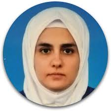

About

Nouar AlDahoul is a Research Scientist at New York University Abu Dhabi (NYUAD), specializing in artificial intelligence, environmental modeling, healthcare applications, and computational social science. She received her Ph.D. in Engineering from the International Islamic University Malaysia in 2019. She previously served as a postdoctoral associate at NYUAD, where she led experimental studies on gender and racial bias in generative AI, safety in large language models (LLMs), content moderation in media, misinformation detection, and political ideological leanings in LLMs. Her work bridges technical innovation with ethical inquiry, advancing fairness, safety, and interpretability in AI systems.
In parallel with her research, Nouar has worked extensively as a trainer with Tertiary Courses Malaysia and Iverson Malaysia, delivering over 60 workshops to individuals, academic groups, and corporate teams. Her sessions cover AI, machine learning, natural language processing, computer vision, the Internet of Things (IoT), and LLMs, with an emphasis on hands-on learning, conceptual clarity, and real-world application.
- Machine Learning
- Deep Learning
- Computer Vision
- Natural Language Processing
- Generative AI & LLMs
- Computational Social Science
- Internet of Things
News
-
2026
Excited to share NYUAD team’s performance at the ImageEval Shared Task (Culturally Grounded Arabic Visual Question Answering and Hallucination Detection) in the ArabicNLP conference. Show details
Excited to share NYUAD team’s performance at the ImageEval Shared Task (Culturally Grounded Arabic Visual Question Answering and Hallucination Detection) in the ArabicNLP conference! 🚀
The team achieved top-tier results across multimodal evaluation benchmarks in both Modern Standard Arabic (MSA) and English.
The results table is sourced from the ImageEval shared task paper.
For more details, see the NYUAD system description paper.
-
2026
-
2026
Experience
-
2026 – PresentResearch ScientistNew York University Abu Dhabi, UAE
Research in computational social science, and safety and bias in large language models.
-
2022 – 2025Postdoctoral AssociateNew York University Abu Dhabi, UAE
Research in machine learning applications, computational social science, and safety and bias in large language models.
-
2019 – 2021Senior ResearcherFaculty of Engineering, Multimedia University, Malaysia
Deep learning applications for computer vision and signal processing.
Education
-
2019Ph.D. in EngineeringInternational Islamic University Malaysia
-
M.Eng.Master of Engineering, Robotics EngineeringDamascus University, Syria
-
B.Eng.Bachelor of Engineering, Computer EngineeringDamascus University, Syria
Awards
-
2025First place, ArabicNLP 2025 challenge
-
2020First place, ICIP 2020 challengeIEEE International Conference on Image Processing
Journal publications
-
2026Scientific Reports
Proposes FaceScanPaliGemma, a multi-agent system of four fine-tuned PaliGemma models, each specialized in recognizing one facial attribute: race, gender, age, or emotion.
-
2025Guardians of Digital Safety: Benchmarking Large Language Models in the Fight Against Online ToxicityJournal of Big Data
Benchmarks large language models and evaluation frameworks for mitigating online toxicity and supporting safe AI deployment.
-
2025Scientific Reports
Proposes debiasing solutions that let users specify desired distributions of race and gender when generating images, while minimizing racial homogenization.
-
2025Scientific Reports
Introduces WebDiffusion, a tool that simulates a web powered by Stable Diffusion, and shows that generative AI can already produce relevant, high-quality web images from page context alone.
Conference papers
-
2026ArabicNLP 2026 Shared Tasks, co-located with EMNLP 2026, Budapest, Hungary (to appear)
Uses pre-trained and fine-tuned multilingual embedding models to detect hateful Arabic memes and unsafe LLM prompts.
-
2026ArabicNLP 2026 Shared Tasks, co-located with EMNLP 2026, Budapest, Hungary (to appear)
Applies a multimodal LLM to spoken visual question answering and image-grounded hallucination detection in English and Modern Standard Arabic.
-
2025ArabicNLP 2025 Shared Tasks, co-located with EMNLP 2025, Suzhou, China
Benchmarks how well large language models reason through Arabic Islamic inheritance cases.
-
2025ArabicNLP 2025 Shared Tasks, co-located with EMNLP 2025, Suzhou, China
Uses large language models to detect hope speech, hate speech, and emotion in Arabic text and multimodal memes.
-
2025ArabicNLP 2025 Shared Tasks, co-located with EMNLP 2025, Suzhou, China
Benchmarks the medical understanding and reasoning of large language models on Arabic healthcare questions.
-
2025COLING 2025, Abu Dhabi, UAE
Shows that fine-tuning LLMs on harmless tasks such as code generation and translation weakens their safety guardrails, and explores ways to mitigate this.
Preprints
-
2026arXiv:2608.05178 (under review)
Investigates geographical and status biases when LLM agents act as gatekeepers in simulated academic selection processes.
-
2026SSRN 6900538 (under review)
Analyzes whether LLMs make independent predictions or mirror public consensus in sports forecasting.
-
2025arXiv:2505.04171
Analyzes the political ideology, consistency, and persuasiveness of LLMs in informational settings.
-
2024arXiv:2411.17123
Evaluates LLMs and vision-language models for multimodal content moderation across text, images, and videos.
-
2024arXiv:2406.10400
Proposes a self-reflection framework that lets LLMs correct toxic outputs, reduce bias, and move toward ideological neutrality without heavy fine-tuning.
-
2024arXiv:2405.06404
A large-scale longitudinal analysis of racial and gender representation in fashion magazines and movie posters, with preregistered survey experiments showing that inclusive imagery reduces biased perceptions of minorities.
Gallery
Figures from my papers, grouped by paper. Select any figure to open the paper it comes from.
Figures could not be loaded right now. Please try again later.